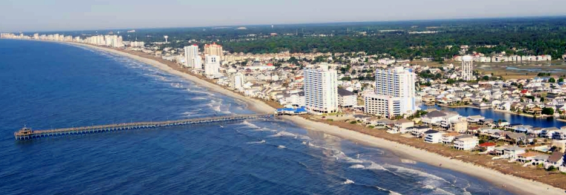
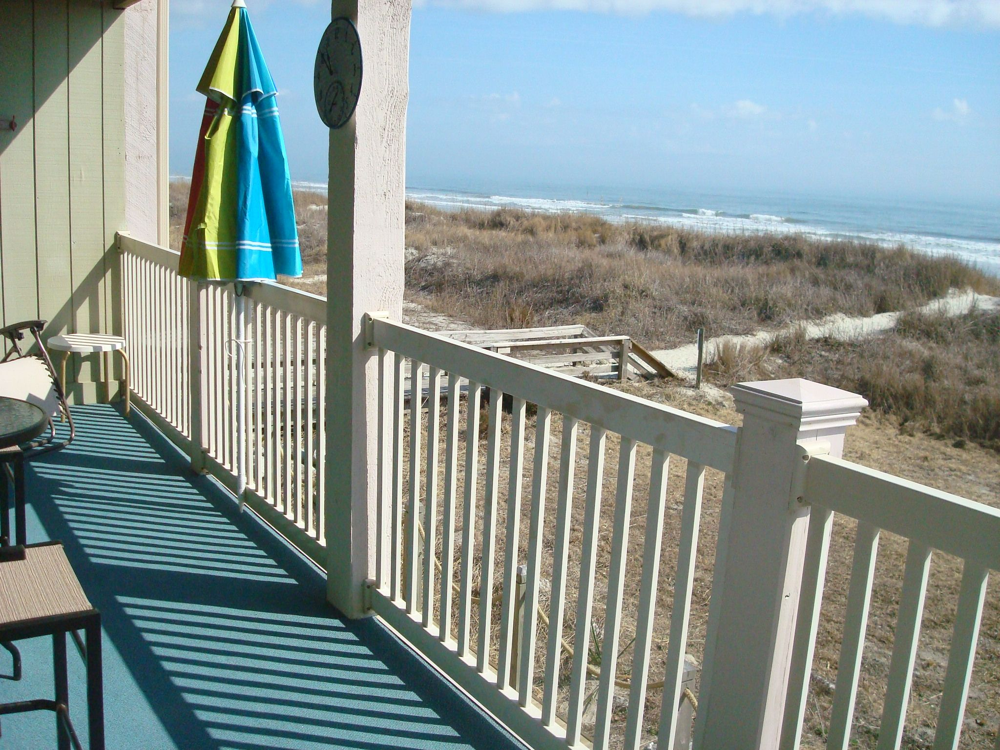
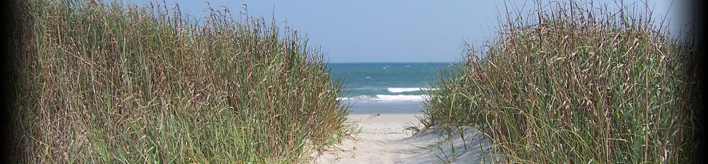

Me my family and friends went to North Myrtle Beach, it was really fun, i really enjoyed the days we spent there, we rented a house and went to the beach 2 or 3 times.
So we left Greenville at 10:30 am, it was a long trip of 4 hours so we had to leave early, after an hour we went on a mall and bought food for us, after eating for one hour we decided to keep driving Because we had no time to lose, so to kill time we decided to listen to music -Any better ideas?- also we were in separated cars so i don't know what my family and my other friends were doing because i had to go with diegos family, so they could have more space.Check this 2 websites out:North-Myrtle-Beach North Myrtle Beach Tourism
I'll be honest waiting for 3 hours in a car Sucks, so me and diegos(Diego is one of friends that went to North Myrtle Beach with me and my other friends and family) family got to the house first, it was windy and almost raining.So me and diego -since we had nothing else important to do with our lives- took our shoes off just to run into the to the sand , but we waited for the others so we could go to the beach and have some fun.My other friends and family came, we got ready and walked to the beach, unfortunately it was windy and the waves were so strong they dragged me to the coast it's been almost 2 years since i faced such strong waves, last time i saw waves like that it was in dominican republic, so yeah i was really surprised by how strong the waves were, it was certanly not one of my best days but also not the worst of my days!.Also we didn't think that we had to shower after going to the beach so everything was a complete mess when we came back to the house.
So, thanks to our mothers we managed to clean the mess, luckly my good friend henry had prepared burgers for us, they were delicious, we pretty much did nothing important that day but we had fun, Time Skip! So the next day i David Martinez confronted my rival the Beach -oops almost forgot that this is literally non-ficiton since it's a real life story- anyway we did go to the beach again and it was really entertaining, we played soccer and other games, we swimmed and attempted to surf on the waves-We failed though, but it's just like one wise man said: it was worth it-, although at the end of the day i had a Concussion,apparently one strong wave caught me off guard and sent me to directly to the coast, the thing is that i accidently broke one of my friends nose...don't worry he's okay, but me? well they had to help me get to the house, i couldn't even walk right.After that i had my favorite cereal and i ate nachos with diego and i did went again into the beach, it was a really entertaining day. And we even watched a movie after eating dinner, Here's a couple of pictures of what the beach and house look like.
 
By: David